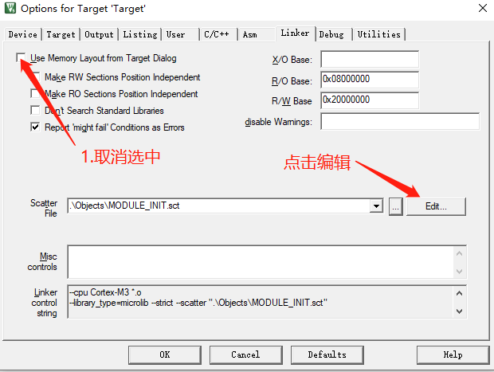
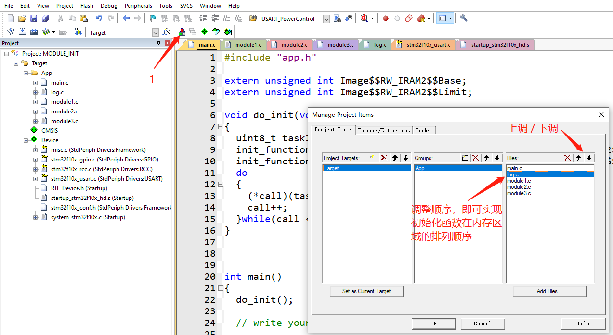

类linux驱动模块框架module_init(init_fun)在STM32上的实现¶
设计思想¶
利用编译器的特性，在程序编译时将各模块初始化函数顺序存放到内存的指定地址，然后在程序运行时main函数从这块内存区域中 依次调用各模块的初始化函数，自动完成各个模块的初始化工作，同时增强了程序的高内聚低耦合特性，提高了软件的质量。
试验环境¶
- 工具链：Keil5
- 开发板：STM32F103ZE
1. 修改链接脚本¶
修改链接脚本的目的是：在STM32的内存中，留出一块合适的大小(大小根据自己的需求调整)， 用来存放各个模块的初始化函数
1.1 内存分配¶
在Keil中新建一个工程，编译后在工程目录下的Objects文件夹中会自动生成一个以.sct结尾的链接脚本， 其内容如下：
1 2 3 4 5 6 7 8 9 10 11 12 13 14 15 16 17 | ; *************************************************************
; *** Scatter-Loading Description File generated by uVision ***
; *************************************************************
LR_IROM1 0x08000000 0x00080000 { ; load region size_region
ER_IROM1 0x08000000 0x00080000 { ; load address = execution address
*.o (RESET, +First)
*(InRoot$$Sections)
.ANY (+RO)
.ANY (+XO)
}
; 此区域(RW_IRAM1)使用所有的内存64Kb
RW_IRAM1 0x20000000 0x00010000 { ; RW data
.ANY (+RW +ZI)
}
}
|
我们将其修改：RW_IRAM1为48K，RW_IRAM2为16K，其中RW_IRAM2用来顺序存放各模块的初始化函数。
1 2 3 4 5 6 7 8 9 10 11 12 13 14 15 16 17 18 19 20 21 22 | ; *************************************************************
; *** Scatter-Loading Description File generated by uVision ***
; *************************************************************
LR_IROM1 0x08000000 0x00080000 { ; load region size_region
ER_IROM1 0x08000000 0x00080000 { ; load address = execution address
*.o (RESET, +First)
*(InRoot$$Sections)
.ANY (+RO)
.ANY (+XO)
}
;RW_IRAM1为48K，供应用程序使用
RW_IRAM1 0x20000000 0x0000c000 { ; RW data
.ANY (+RW +ZI)
}
;RW_IRAM2为16K，用于存放各个模块的初始化函数
RW_IRAM2 0x2000c000 0x00004000 { ; RW data
*.o(RAMCODE)
}
}
|
友情提示：keil中链接脚本的修改方法如下图所示 
1.2 将指定的函数存放到指定的内存区域¶
上面我们对STM32的内存进行了分配，16K大小的RW_IRAM2内存区域将用作存储初始化函数， 那么怎么才能将指定的函数放进这个区域呢？
- 实现方法如下：
1 2 3 4 5 6 | // 初始化函数的原型，函数原型可根据实际需求调整 typedef void (*init_function_list)(uint8_t taskID); // 通过MODULE_INIT(func)，func函数在编译时将会被链接到RAMCODE内存区，既我们为初始化函数预先分配的内存区域 #define _init __attribute__((used, section("RAMCODE"))) #define MODULE_INIT(func) init_function_list _fn_##func _init = func |
将所有的初始化函数都写进特定内存区域后，我们只需知道这个区域的起止地址，就可以统一遍历调用所有的初始化函数， 从而实现对各个模块的初始化。
- 模块的初始化有顺序要求怎么办？ 有时一个模块的正常使用必须在某个模块初始化之后，比如一个模块需要打印Log，那么Log模块必须在它之前被初始化。 怎么解决了？其实很简单，统一调用初始化函数时，我们是根据内存地址顺序调用的，那么将Log模块的初始化函数放在其前面就可以了。
在Keil中可以这么做： 
1.3 使用举例¶
Talk is cheap. Show me the code.
- module1.c,module2.c,module3.c 为3个独立的模块，其初始化函数都为内部函数(使用static修饰)，符合高内聚低耦合的软件设计思想
- main.c中，do_init函数直接通过初始化函数的内存地址，对初始化函数逐个进行调用
简单示例代码如下：
- module1.c
1 2 3 4 5 6 | static void module1_init(uint8_t taskID) { // write your code ... } MODULE_INIT(module1_init); |
- module2.c
1 2 3 4 5 6 | static void module2_init(uint8_t taskID) { // write your code ... } MODULE_INIT(module2_init); |
- module3.c
1 2 3 4 5 6 | static void module3_init(uint8_t taskID) { // write your code ... } MODULE_INIT(module3_init); |
- main.c
1 2 3 4 5 6 7 8 9 10 11 12 13 14 15 16 17 18 19 20 21 22 23 24 25 | void do_init(void) { uint8_t taskID = 0; init_function_list *call = (init_function_list *)&Image$$RW_IRAM2$$Base; init_function_list *end = (init_function_list *)&Image$$RW_IRAM2$$Limit; do { (*call)(taskID++); call++; }while(call < end); } int main() { // init all module in the function do_init(); // write your code ... while(1) { // write your code ... } } |